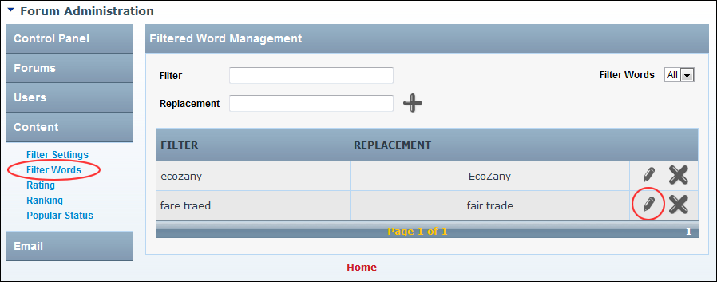
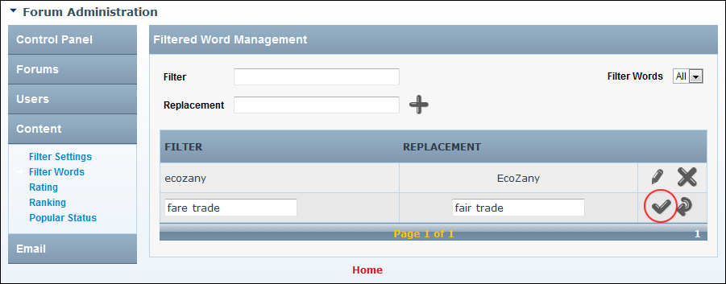

Editing Filtered Words
How to edit a filtered word and/or its replacement word in the Forum module.
- Go to the Forum Administration page. See "Navigating to the Forum Admin Page"
- In the left-hand panel, select Content > Filter Words. This displays the Filtered Word Management window.
- In the Filter column, locate the filtered word to be edited. See "Filtering Filter Words"
- Click the Edit
 button.
button.

- Edit the Filter and/or the optional Replacement word as required.
- Click the Update button.

Editing Filtered Words